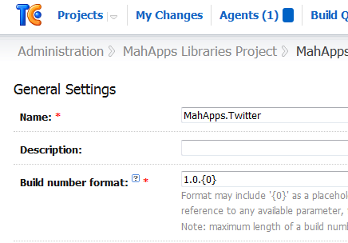

I started exploring NuGet package building yesterday evening, as a strategy for managing dependencies between projects I'm involved with.
And with NuGet in the enterprise being the upcoming hotness, I thought I'd see how I could get companies I work with to start doing similar things with their internal projects. It was much easier than I'd expected, with a couple of hurdles.
The Goal
I have two projects, A and B. A has no upstream dependencies (that have NuGet packages, anyway), but B requires A.
So, after A builds and passes its tests, I want to:
- Create a new package for A, using it's build number.
- Publish the package for A somewhere
- Trigger a new build for B, using the newest version of A.
- Verify B builds and passes tests.
- Create a new package for B, using it's build number.
- Publish the package for B somewhere.
After a couple of hours work, I'm 95% of the way there.
Defining the package specification
As I wasn't really familiar with the process of creating the .nuspec file (sorry Damo, your NDC talk was a long time ago :)) I decided to go and craft it by hand. I used this blog post by Joshua Flanagan (including a good reference nuspec file) to get started.
And that's about it. Put that into my build folder along with the NuGet.exe - I grabbed the latest one from the 1.4 OOB build on NuGet CI server due to an issue with how it parses the <files> element. This should be part of the next release.
Building the package on the server
So, I'm using TeamCity to build the project. Thus, I can use the build number directly against the NuGet package.
NOTE: Using the default value TeamCity provides for a project, which is just an incrementing integer, will fail with a "Version string portion was too short or too long" error. To fix that, go to General Settings and make it something more descriptive:

With that in place, the next step is to add in a post-build step:

The script I've used (duplicated for two different packages):
del *.nupkg
.\NuGet.exe pack Package.nuspec -Version %system.build.number%
That script is courtesy of Scott Kirkland, who also has a decent guide to using NuGet on TC here
Publishing the package
I didn't want to publish these packages to the NuGet gallery immediately, so what other options do I have? I could set up my own NuGet gallery. Or I could use MyGet and skip all the hassle.
For those who aren't familiar with MyGet, its a service to create custom NuGet feeds. All I've done so far is create a private feed (which anyone can consume) and obtained an API key.
{kind=link}
While MyGet supports the ability to upload or create packages within the admin UI, I was feeling lazy and wanted to push packages from the build server.
This required an additional line in the script:
del *.nupkg
.\NuGet.exe pack Package.nuspec -Version %system.build.number%
forfiles /m *.nupkg /c "cmd /c NuGet.exe push @FILE <your-key> -Source https://www.myget.org/F/mahapps/"
which will find all .nupkg files and invoke push against the specific repository - in this case, my private feed.
Trigger a new build
This isn't directly related to NuGet, but I wanted to force a new build when upstream packages change in TeamCity.
Under Build Triggering in the Project Configuration, add a trigger for "Finish Build" and select the upstream project.
{kind=link}
Update the package for A and test
Right, this is where things get rough.
I added a step before building the project, and executed this command:
.\Nuget.exe update ..\MahApps.Twitter.sln -Source http://www.myget.org/f/mahapps
which will look through all the projects in my solution and update to the newest packages it can find. I've added in my MyGet feed URL to grab the latest packages from the specific feed.
And this works. Kinda.
{kind=link}
It updates my projects, but doesn't store updated packages locally. Which causes my build to break.
{kind=link}
Scouring the forums produced this discussion on this issue, which recommended this workaround:
nuget install MyProj\packages.config -o packages
NOTE: a minor grievance with the install command. Unlike the update command, this works against a project's repository. This seems subpar, when I can call update against a solution file. Can we get some consistency with this? Or have I missed something with how install behaves?
Fine, not all workarounds are pretty.
Let's modify my script to suit:
.\Nuget.exe update ..\MahApps.Twitter.sln -Source http://www.myget.org/f/mahapps -Source https://go.microsoft.com/fwlink/?LinkID=206669 -o ..\packages
.\Nuget.exe install ..\src\Identica\packages.config -Source http://www.myget.org/f/mahapps -Source https://go.microsoft.com/fwlink/?LinkID=206669 -o ..\packages
.\Nuget.exe install ..\src\NET4\packages.config -Source http://www.myget.org/f/mahapps -Source https://go.microsoft.com/fwlink/?LinkID=206669 -o ..\packages
.\Nuget.exe install ..\src\Tests\packages.config -Source http://www.myget.org/f/mahapps -Source https://go.microsoft.com/fwlink/?LinkID=206669 -o ..\packages
.\Nuget.exe install ..\src\WP7\packages.config -Source http://www.myget.org/f/mahapps -Source https://go.microsoft.com/fwlink/?LinkID=206669 -o ..\packages
Icky. Whatever, I've got awesome to do.
https://go.microsoft.com/fwlink/?LinkID=206669 is the path to the official NuGet feed (the build server couldn't find some packages), and it is explicitly after my local feed (I may have some custom packages which I prefer). And I've added the "-o" parameter to point to the default packages location, just in case.
Aaaaand...
{kind=link}
Booyah!
TODO
- submit patch for making update more "correct" ?
- demonstrate how to add to VS tooling and how it changes dev story
- some documentation on managing upstream dependencies